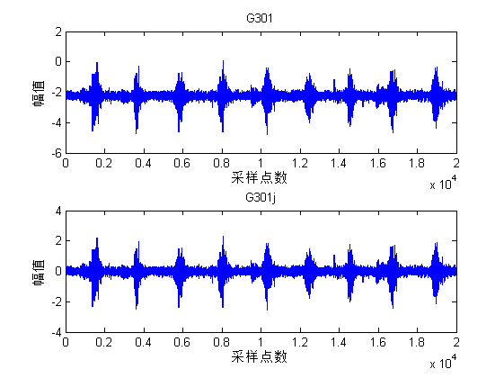
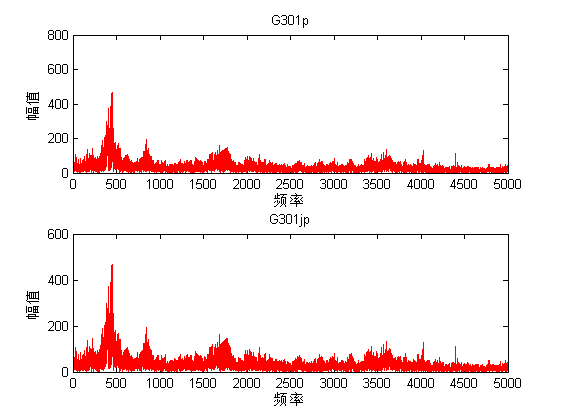
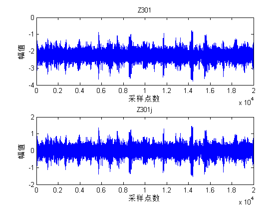
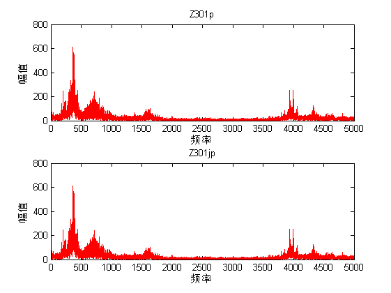
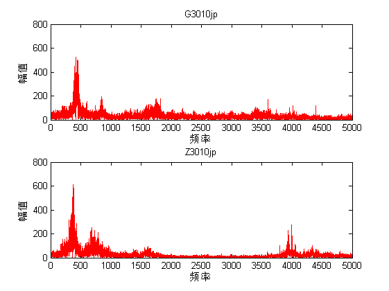
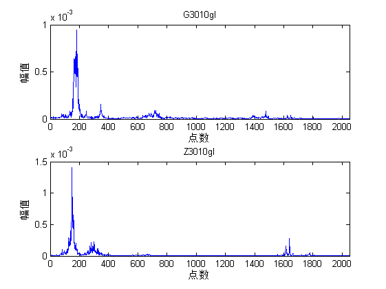
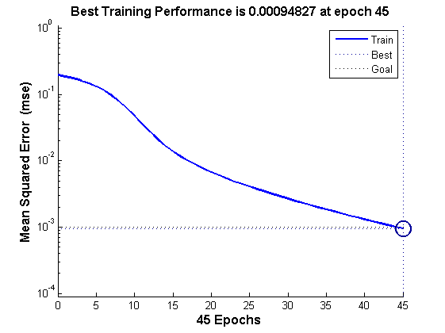
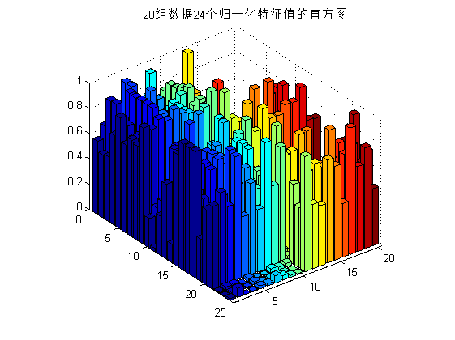

Contents
滚动轴承故障诊断前期数据处理
%=========================================================================%
数据的导入处理G3015
%===========================轴承故障诊断数据处理===========================% %%导入数据 % fg=fopen('G3015.txt','r'); %以读的方式打开数据文件 % G3015=textscan(fg,'%f'); %读取数据 % fclose(fg); %关闭文件 %========格式化读写，生成元包数组==========================================% %=============直接读取====================================================% G3015=textread('G3015.txt','%f') ; %读取数据生成矩阵 G301=G3015(1:1:20000); %取数组前20000个元素，即第一组数据，采样点数为20000 G301j=G301-mean(G301); %零均值处理，%G301j=G301-sum(G301)/20000 G302=G3015(20001:1:40000); G302j=G302-mean(G302); %零均值处理 G303=G3015(40001:1:60000); G303j=G303-mean(G303); %零均值处理 G304=G3015(60001:1:80000); G304j=G304-mean(G304); %零均值处理 G305=G3015(80001:1:100000); G305j=G305-mean(G305); %零均值处理 G30610=textread('G30610.txt','%f') ; %读取数据生成矩阵 G306=G30610(1:1:20000); %取数组前20000个元素，即第一组数据，采样点数为20000 G306j=G306-mean(G306); %零均值处理，%G306j=G306-sum(G306)/20000 G307=G30610(20001:1:40000); G307j=G307-mean(G307); %零均值处理 G308=G30610(40001:1:60000); G308j=G308-mean(G308); %零均值处理 G309=G30610(60001:1:80000); G309j=G309-mean(G309); %零均值处理 G3010=G30610(80001:1:100000); G3010j=G3010-mean(G3010); %零均值处理
零均值处理时域图对比
%%%%%%用语句 isequal(G301j,(G301-sun(G301)/20000))判断正确性，返回值应该为1 subplot(2,1,1); %分割图形窗口2X1，在1上绘图 plot(G301); %绘图,X轴以索引值为横坐标 xlabel('采样点数'); %x轴标注 ylabel('幅值'); %y轴标注 title('G301'); %图形标题标注 subplot(2,1,2); %分割图形窗口2X1，在2上绘图 plot(G301j); %绘图,X轴以索引值为横坐标 xlabel('采样点数'); %x轴标注 ylabel('幅值'); %y轴标注 title('G301j'); %图形标题标注 %=============以上为在时域上的图形，零均值后图形向下平移均值个单位============%
零均值处理频域图对比
%=============在频域上作图=================================================% N=length(G301); %采样点数，20000 fs=10000; %采样频率 f=(0:N-1)'*fs/N; %进行对应频率变换,（0：N-1）'矩阵转置，行变为列 G301p=abs(fft(G301)); %G301进行fft变换 G301jp=abs(fft(G301j));%G301j进行fft变换 subplot(2,1,1); plot(f(1:N/2),G301p(1:N/2),'r'); %用向量一半的数据作图,红色曲线 ylim([0,800]); %定义Y轴显示范围 xlabel('频率'); %x轴标注 ylabel('幅值'); %y轴标注 title('G301p'); %图形标题标注 subplot(2,1,2); plot(f(1:N/2),G301jp(1:N/2),'r'); %用向量一半的数据作图,红色曲线 %===== ylim([0,800]); %定义Y轴显示范围 xlabel('频率'); %x轴标注 ylabel('幅值'); %y轴标注 title('G301jp'); %图形标题标注
时域特征提取G3015
G301m=sum(G301j)/20000; %G301m为均值，G301j为零均值化处理后结果，下同 G301f=sum((G301j-G301m).^2); %G301f为方差 G301rms=sqrt(sum(G301j.^2)/20000); %G301rms均方根值 G301peak=(max(G301j)-min(G301j))/2; %G301peak为峰值 G301c= G301peak/G301rms; %G301c为峰值因子 G301k=sum(G301j.^4)/((G301rms.^4)*20000); %G301k为峭度系数 G301s=(G301rms*20000)/sum(abs(G301j)); %G301s为波形因子 G301cl=G301peak/(sum(sqrt(abs(G301j)))/20000).^2; %G301cl裕度因子 G301i=(G301peak*20000)/sum(abs(G301j)); %G301i脉冲因子 G302m=sum(G302j)/20000; %G302m为均值，G302j为零均值化处理后结果，下同 G302f=sum((G302j-G302m).^2); %G302f为方差 G302rms=sqrt(sum(G302j.^2)/20000); %G302rms均方根值 G302peak=(max(G302j)-min(G302j))/2; %G302peak为峰值 G302c= G302peak/G302rms; %G302c为峰值因子 G302k=sum(G302j.^4)/((G302rms.^4)*20000); %G302k为峭度系数 G302s=(G302rms*20000)/sum(abs(G302j)); %G302s为波形因子 G302cl=G302peak/(sum(sqrt(abs(G302j)))/20000).^2; %G302cl裕度因子 G302i=(G302peak*20000)/sum(abs(G302j)); %G302i脉冲因子 G303m=sum(G303j)/20000; %G303m为均值，G303j为零均值化处理后结果，下同 G303f=sum((G303j-G303m).^2); %G303f为方差 G303rms=sqrt(sum(G303j.^2)/20000); %G303rms均方根值 G303peak=(max(G303j)-min(G303j))/2; %G303peak为峰值 G303c= G303peak/G303rms; %G303c为峰值因子 G303k=sum(G303j.^4)/((G303rms.^4)*20000); %G303k为峭度系数 G303s=(G303rms*20000)/sum(abs(G303j)); %G303s为波形因子 G303cl=G303peak/(sum(sqrt(abs(G303j)))/20000).^2; %G303cl裕度因子 G303i=(G303peak*20000)/sum(abs(G303j)); %G303i脉冲因子 G304m=sum(G304j)/20000; %G304m为均值，G304j为零均值化处理后结果，下同 G304f=sum((G304j-G304m).^2); %G304f为方差 G304rms=sqrt(sum(G304j.^2)/20000); %G304rms均方根值 G304peak=(max(G304j)-min(G304j))/2; %G304peak为峰值 G304c= G304peak/G304rms; %G304c为峰值因子 G304k=sum(G304j.^4)/((G304rms.^4)*20000); %G304k为峭度系数 G304s=(G304rms*20000)/sum(abs(G304j)); %G304s为波形因子 G304cl=G304peak/(sum(sqrt(abs(G304j)))/20000).^2; %G304cl裕度因子 G304i=(G304peak*20000)/sum(abs(G304j)); %G304i脉冲因子 G305m=sum(G305j)/20000; %G305m为均值，G305j为零均值化处理后结果，下同 G305f=sum((G305j-G305m).^2); %G305f为方差 G305rms=sqrt(sum(G305j.^2)/20000); %G305rms均方根值 G305peak=(max(G305j)-min(G305j))/2; %G305peak为峰值 G305c= G305peak/G305rms; %G305c为峰值因子 G305k=sum(G305j.^4)/((G305rms.^4)*20000); %G305k为峭度系数 G305s=(G305rms*20000)/sum(abs(G305j)); %G305s为波形因子 G305cl=G305peak/(sum(sqrt(abs(G305j)))/20000).^2; %G305cl裕度因子 G305i=(G305peak*20000)/sum(abs(G305j)); %G305i脉冲因子 G306m=sum(G306j)/20000; %G306m为均值，G306j为零均值化处理后结果，下同 G306f=sum((G306j-G306m).^2); %G306f为方差 G306rms=sqrt(sum(G306j.^2)/20000); %G306rms均方根值 G306peak=(max(G306j)-min(G306j))/2; %G306peak为峰值 G306c= G306peak/G306rms; %G306c为峰值因子 G306k=sum(G306j.^4)/((G306rms.^4)*20000); %G306k为峭度系数 G306s=(G306rms*20000)/sum(abs(G306j)); %G306s为波形因子 G306cl=G306peak/(sum(sqrt(abs(G306j)))/20000).^2; %G306cl裕度因子 G306i=(G306peak*20000)/sum(abs(G306j)); %G306i脉冲因子 G307m=sum(G307j)/20000; %G307m为均值，G307j为零均值化处理后结果，下同 G307f=sum((G307j-G307m).^2); %G307f为方差 G307rms=sqrt(sum(G307j.^2)/20000); %G307rms均方根值 G307peak=(max(G307j)-min(G307j))/2; %G307peak为峰值 G307c= G307peak/G307rms; %G307c为峰值因子 G307k=sum(G307j.^4)/((G307rms.^4)*20000); %G307k为峭度系数 G307s=(G307rms*20000)/sum(abs(G307j)); %G307s为波形因子 G307cl=G307peak/(sum(sqrt(abs(G307j)))/20000).^2; %G307cl裕度因子 G307i=(G307peak*20000)/sum(abs(G307j)); %G307i脉冲因子 G308m=sum(G308j)/20000; %G308m为均值，G308j为零均值化处理后结果，下同 G308f=sum((G308j-G308m).^2); %G308f为方差 G308rms=sqrt(sum(G308j.^2)/20000); %G308rms均方根值 G308peak=(max(G308j)-min(G308j))/2; %G308peak为峰值 G308c= G308peak/G308rms; %G308c为峰值因子 G308k=sum(G308j.^4)/((G308rms.^4)*20000); %G308k为峭度系数 G308s=(G308rms*20000)/sum(abs(G308j)); %G308s为波形因子 G308cl=G308peak/(sum(sqrt(abs(G308j)))/20000).^2; %G308cl裕度因子 G308i=(G308peak*20000)/sum(abs(G308j)); %G308i脉冲因子 G309m=sum(G309j)/20000; %G309m为均值，G309j为零均值化处理后结果，下同 G309f=sum((G309j-G309m).^2); %G309f为方差 G309rms=sqrt(sum(G309j.^2)/20000); %G309rms均方根值 G309peak=(max(G309j)-min(G309j))/2; %G309peak为峰值 G309c= G309peak/G309rms; %G309c为峰值因子 G309k=sum(G309j.^4)/((G309rms.^4)*20000); %G309k为峭度系数 G309s=(G309rms*20000)/sum(abs(G309j)); %G309s为波形因子 G309cl=G309peak/(sum(sqrt(abs(G309j)))/20000).^2; %G309cl裕度因子 G309i=(G309peak*20000)/sum(abs(G309j)); %G309i脉冲因子 G3010m=sum(G3010j)/20000; %G3010m为均值，G3010j为零均值化处理后结果，下同 G3010f=sum((G3010j-G3010m).^2); %G3010f为方差 G3010rms=sqrt(sum(G3010j.^2)/20000); %G3010rms均方根值 G3010peak=(max(G3010j)-min(G3010j))/2; %G3010peak为峰值 G3010c= G3010peak/G3010rms; %G3010c为峰值因子 G3010k=sum(G3010j.^4)/((G3010rms.^4)*20000); %G3010k为峭度系数 G3010s=(G3010rms*20000)/sum(abs(G3010j)); %G3010s为波形因子 G3010cl=G3010peak/(sum(sqrt(abs(G3010j)))/20000).^2; %G3010cl裕度因子 G3010i=(G3010peak*20000)/sum(abs(G3010j)); %G3010i脉冲因子
轴承Z3015处理
%===================数据导入且进行零均值处理================================% %=============直接读取====================================================% Z3015=textread('Z3015.txt','%f') ; %读取数据生成矩阵 Z301=Z3015(1:1:20000); %取数组前20000个元素，即第一组数据，采样点数为20000 Z301j=Z301-mean(Z301); %零均值处理，%Z301j=Z301-sum(Z301)/20000 Z302=Z3015(20001:1:40000); Z302j=Z302-mean(Z302); %零均值处理 Z303=Z3015(40001:1:60000); Z303j=Z303-mean(Z303); %零均值处理 Z304=Z3015(60001:1:80000); Z304j=Z304-mean(Z304); %零均值处理 Z305=Z3015(80001:1:100000); Z305j=Z305-mean(Z305); %零均值处理 Z30610=textread('Z30610.txt','%f') ; %读取数据生成矩阵 Z306=Z30610(1:1:20000); %取数组前20000个元素，即第一组数据，采样点数为20000 Z306j=Z306-mean(Z306); %零均值处理，%Z306j=Z306-sum(Z306)/20000 Z307=Z30610(20001:1:40000); Z307j=Z307-mean(Z307); %零均值处理 Z308=Z30610(40001:1:60000); Z308j=Z308-mean(Z308); %零均值处理 Z309=Z30610(60001:1:80000); Z309j=Z309-mean(Z309); %零均值处理 Z3010=Z30610(80001:1:100000); Z3010j=Z3010-mean(Z3010); %零均值处理
零均值处理时域图对比
%%%%%%用语句 isequal(Z301j,(Z301-sun(Z301)/20000))判断正确性，返回值应该为1 subplot(2,1,1); %分割图形窗口2X1，在1上绘图 plot(Z301); %绘图,X轴以索引值为横坐标 xlabel('采样点数'); %x轴标注 ylabel('幅值'); %y轴标注 title('Z301'); %图形标题标注 subplot(2,1,2); %分割图形窗口2X1，在2上绘图 plot(Z301j); %绘图,X轴以索引值为横坐标 xlabel('采样点数'); %x轴标注 ylabel('幅值'); %y轴标注 title('Z301j'); %图形标题标注 %=============以上为在时域上的图形，零均值后图形向下平移均值个单位============%
零均值处理频域图对比
%=============在频域上作图=================================================% N=length(Z301); %采样点数，20000 fs=10000; %采样频率 f=(0:N-1)'*fs/N; %进行对应频率变换,（0：N-1）'矩阵转置，行变为列 Z301p=abs(fft(Z301)); %Z301进行fft变换 Z301jp=abs(fft(Z301j));%Z301j进行fft变换 subplot(2,1,1); plot(f(1:N/2),Z301p(1:N/2),'r'); %用向量一半的数据作图,红色曲线 ylim([0,800]); %定义Y轴显示范围 xlabel('频率'); %x轴标注 ylabel('幅值'); %y轴标注 title('Z301p'); %图形标题标注 subplot(2,1,2); plot(f(1:N/2),Z301jp(1:N/2),'r'); %用向量一半的数据作图,红色曲线 %===== ylim([0,800]); %定义Y轴显示范围 xlabel('频率'); %x轴标注 ylabel('幅值'); %y轴标注 title('Z301jp'); %图形标题标注
时域特征提取Z3015
Z301m=sum(Z301j)/20000; %Z301m为均值，Z301j为零均值化处理后结果，下同 Z301f=sum((Z301j-Z301m).^2); %Z301f为方差 Z301rms=sqrt(sum(Z301j.^2)/20000); %Z301rms均方根值 Z301peak=(max(Z301j)-min(Z301j))/2; %Z301peak为峰值 Z301c= Z301peak/Z301rms; %Z301c为峰值因子 Z301k=sum(Z301j.^4)/((Z301rms.^4)*20000); %Z301k为峭度系数 Z301s=(Z301rms*20000)/sum(abs(Z301j)); %Z301s为波形因子 Z301cl=Z301peak/(sum(sqrt(abs(Z301j)))/20000).^2; %Z301cl裕度因子 Z301i=(Z301peak*20000)/sum(abs(Z301j)); %Z301i脉冲因子 Z302m=sum(Z302j)/20000; %Z302m为均值，Z302j为零均值化处理后结果，下同 Z302f=sum((Z302j-Z302m).^2); %Z302f为方差 Z302rms=sqrt(sum(Z302j.^2)/20000); %Z302rms均方根值 Z302peak=(max(Z302j)-min(Z302j))/2; %Z302peak为峰值 Z302c= Z302peak/Z302rms; %Z302c为峰值因子 Z302k=sum(Z302j.^4)/((Z302rms.^4)*20000); %Z302k为峭度系数 Z302s=(Z302rms*20000)/sum(abs(Z302j)); %Z302s为波形因子 Z302cl=Z302peak/(sum(sqrt(abs(Z302j)))/20000).^2; %Z302cl裕度因子 Z302i=(Z302peak*20000)/sum(abs(Z302j)); %Z302i脉冲因子 Z303m=sum(Z303j)/20000; %Z303m为均值，Z303j为零均值化处理后结果，下同 Z303f=sum((Z303j-Z303m).^2); %Z303f为方差 Z303rms=sqrt(sum(Z303j.^2)/20000); %Z303rms均方根值 Z303peak=(max(Z303j)-min(Z303j))/2; %Z303peak为峰值 Z303c= Z303peak/Z303rms; %Z303c为峰值因子 Z303k=sum(Z303j.^4)/((Z303rms.^4)*20000); %Z303k为峭度系数 Z303s=(Z303rms*20000)/sum(abs(Z303j)); %Z303s为波形因子 Z303cl=Z303peak/(sum(sqrt(abs(Z303j)))/20000).^2; %Z303cl裕度因子 Z303i=(Z303peak*20000)/sum(abs(Z303j)); %Z303i脉冲因子 Z304m=sum(Z304j)/20000; %Z304m为均值，Z304j为零均值化处理后结果，下同 Z304f=sum((Z304j-Z304m).^2); %Z304f为方差 Z304rms=sqrt(sum(Z304j.^2)/20000); %Z304rms均方根值 Z304peak=(max(Z304j)-min(Z304j))/2; %Z304peak为峰值 Z304c= Z304peak/Z304rms; %Z304c为峰值因子 Z304k=sum(Z304j.^4)/((Z304rms.^4)*20000); %Z304k为峭度系数 Z304s=(Z304rms*20000)/sum(abs(Z304j)); %Z304s为波形因子 Z304cl=Z304peak/(sum(sqrt(abs(Z304j)))/20000).^2; %Z304cl裕度因子 Z304i=(Z304peak*20000)/sum(abs(Z304j)); %Z304i脉冲因子 Z305m=sum(Z305j)/20000; %Z305m为均值，Z305j为零均值化处理后结果，下同 Z305f=sum((Z305j-Z305m).^2); %Z305f为方差 Z305rms=sqrt(sum(Z305j.^2)/20000); %Z305rms均方根值 Z305peak=(max(Z305j)-min(Z305j))/2; %Z305peak为峰值 Z305c= Z305peak/Z305rms; %Z305c为峰值因子 Z305k=sum(Z305j.^4)/((Z305rms.^4)*20000); %Z305k为峭度系数 Z305s=(Z305rms*20000)/sum(abs(Z305j)); %Z305s为波形因子 Z305cl=Z305peak/(sum(sqrt(abs(Z305j)))/20000).^2; %Z305cl裕度因子 Z305i=(Z305peak*20000)/sum(abs(Z305j)); %Z305i脉冲因子 Z306m=sum(Z306j)/20000; %Z306m为均值，Z306j为零均值化处理后结果，下同 Z306f=sum((Z306j-Z306m).^2); %Z306f为方差 Z306rms=sqrt(sum(Z306j.^2)/20000); %Z306rms均方根值 Z306peak=(max(Z306j)-min(Z306j))/2; %Z306peak为峰值 Z306c= Z306peak/Z306rms; %Z306c为峰值因子 Z306k=sum(Z306j.^4)/((Z306rms.^4)*20000); %Z306k为峭度系数 Z306s=(Z306rms*20000)/sum(abs(Z306j)); %Z306s为波形因子 Z306cl=Z306peak/(sum(sqrt(abs(Z306j)))/20000).^2; %Z306cl裕度因子 Z306i=(Z306peak*20000)/sum(abs(Z306j)); %Z306i脉冲因子 Z307m=sum(Z307j)/20000; %Z307m为均值，Z307j为零均值化处理后结果，下同 Z307f=sum((Z307j-Z307m).^2); %Z307f为方差 Z307rms=sqrt(sum(Z307j.^2)/20000); %Z307rms均方根值 Z307peak=(max(Z307j)-min(Z307j))/2; %Z307peak为峰值 Z307c= Z307peak/Z307rms; %Z307c为峰值因子 Z307k=sum(Z307j.^4)/((Z307rms.^4)*20000); %Z307k为峭度系数 Z307s=(Z307rms*20000)/sum(abs(Z307j)); %Z307s为波形因子 Z307cl=Z307peak/(sum(sqrt(abs(Z307j)))/20000).^2; %Z307cl裕度因子 Z307i=(Z307peak*20000)/sum(abs(Z307j)); %Z307i脉冲因子 Z308m=sum(Z308j)/20000; %Z308m为均值，Z308j为零均值化处理后结果，下同 Z308f=sum((Z308j-Z308m).^2); %Z308f为方差 Z308rms=sqrt(sum(Z308j.^2)/20000); %Z308rms均方根值 Z308peak=(max(Z308j)-min(Z308j))/2; %Z308peak为峰值 Z308c= Z308peak/Z308rms; %Z308c为峰值因子 Z308k=sum(Z308j.^4)/((Z308rms.^4)*20000); %Z308k为峭度系数 Z308s=(Z308rms*20000)/sum(abs(Z308j)); %Z308s为波形因子 Z308cl=Z308peak/(sum(sqrt(abs(Z308j)))/20000).^2; %Z308cl裕度因子 Z308i=(Z308peak*20000)/sum(abs(Z308j)); %Z308i脉冲因子 Z309m=sum(Z309j)/20000; %Z309m为均值，Z309j为零均值化处理后结果，下同 Z309f=sum((Z309j-Z309m).^2); %Z309f为方差 Z309rms=sqrt(sum(Z309j.^2)/20000); %Z309rms均方根值 Z309peak=(max(Z309j)-min(Z309j))/2; %Z309peak为峰值 Z309c= Z309peak/Z309rms; %Z309c为峰值因子 Z309k=sum(Z309j.^4)/((Z309rms.^4)*20000); %Z309k为峭度系数 Z309s=(Z309rms*20000)/sum(abs(Z309j)); %Z309s为波形因子 Z309cl=Z309peak/(sum(sqrt(abs(Z309j)))/20000).^2; %Z309cl裕度因子 Z309i=(Z309peak*20000)/sum(abs(Z309j)); %Z309i脉冲因子 Z3010m=sum(Z3010j)/20000; %Z3010m为均值，Z3010j为零均值化处理后结果，下同 Z3010f=sum((Z3010j-Z3010m).^2); %Z3010f为方差 Z3010rms=sqrt(sum(Z3010j.^2)/20000); %Z3010rms均方根值 Z3010peak=(max(Z3010j)-min(Z3010j))/2; %Z3010peak为峰值 Z3010c= Z3010peak/Z3010rms; %Z3010c为峰值因子 Z3010k=sum(Z3010j.^4)/((Z3010rms.^4)*20000); %Z3010k为峭度系数 Z3010s=(Z3010rms*20000)/sum(abs(Z3010j)); %Z3010s为波形因子 Z3010cl=Z3010peak/(sum(sqrt(abs(Z3010j)))/20000).^2; %Z3010cl裕度因子 Z3010i=(Z3010peak*20000)/sum(abs(Z3010j)); %Z3010i脉冲因子
fft变换
G301jp=abs(fft(G301j));%G301j进行fft变换 G302jp=abs(fft(G302j)); G303jp=abs(fft(G303j)); G304jp=abs(fft(G304j)); G305jp=abs(fft(G305j)); G306jp=abs(fft(G306j)); G307jp=abs(fft(G307j)); G308jp=abs(fft(G308j)); G309jp=abs(fft(G309j)); G3010jp=abs(fft(G3010j)); Z301jp=abs(fft(Z301j));%Z301j进行fft变换 Z302jp=abs(fft(Z302j)); Z303jp=abs(fft(Z303j)); Z304jp=abs(fft(Z304j)); Z305jp=abs(fft(Z305j)); Z306jp=abs(fft(Z306j)); Z307jp=abs(fft(Z307j)); Z308jp=abs(fft(Z308j)); Z309jp=abs(fft(Z309j)); Z3010jp=abs(fft(Z3010j));
G3015频率特征值提取
for i=2:20000 G301g(i)=(G301j(i)-G301j(i-1))/(1/10000); end for i=2:20000 G301gg(i)=G301g(i)*G301j(i); end G301msf=(sum((G301g).^2))/(4*(pi^2)*sum(G301j.^2)); %G301msf为均方频率 G301fc=(sum(G301gg))/(2*pi*sum(G301j.^2)); %G301fc重心频率 G301vf=G301msf-G301fc.^2; %G301vf为频率方差 for i=2:20000 G302g(i)=(G302j(i)-G302j(i-1))/(1/10000); end for i=2:20000 G302gg(i)=G302g(i)*G302j(i); end G302msf=(sum((G302g).^2))/(4*(pi^2)*sum(G302j.^2)); %G302msf为均方频率 G302fc=(sum(G302gg))/(2*pi*sum(G302j.^2)); %G302fc重心频率 G302vf=G302msf-G302fc.^2; %G302vf为频率方差 for i=2:20000 G303g(i)=(G303j(i)-G303j(i-1))/(1/10000); end for i=2:20000 G303gg(i)=G303g(i)*G303j(i); end G303msf=(sum((G303g).^2))/(4*(pi^2)*sum(G303j.^2)); %G303msf为均方频率 G303fc=(sum(G303gg))/(2*pi*sum(G303j.^2)); %G303fc重心频率 G303vf=G303msf-G303fc.^2; %G303vf为频率方差 for i=2:20000 G304g(i)=(G304j(i)-G304j(i-1))/(1/10000); end for i=2:20000 G304gg(i)=G304g(i)*G304j(i); end G304msf=(sum((G304g).^2))/(4*(pi^2)*sum(G304j.^2)); %G304msf为均方频率 G304fc=(sum(G304gg))/(2*pi*sum(G304j.^2)); %G304fc重心频率 G304vf=G304msf-G304fc.^2; %G304vf为频率方差 for i=2:20000 G305g(i)=(G305j(i)-G305j(i-1))/(1/10000); end for i=2:20000 G305gg(i)=G305g(i)*G305j(i); end G305msf=(sum((G305g).^2))/(4*(pi^2)*sum(G305j.^2)); %G305msf为均方频率 G305fc=(sum(G305gg))/(2*pi*sum(G305j.^2)); %G305fc重心频率 G305vf=G305msf-G305fc.^2; %G305vf为频率方差 for i=2:20000 G306g(i)=(G306j(i)-G306j(i-1))/(1/10000); end for i=2:20000 G306gg(i)=G306g(i)*G306j(i); end G306msf=(sum((G306g).^2))/(4*(pi^2)*sum(G306j.^2)); %G306msf为均方频率 G306fc=(sum(G306gg))/(2*pi*sum(G306j.^2)); %G306fc重心频率 G306vf=G306msf-G306fc.^2; %G306vf为频率方差 for i=2:20000 G307g(i)=(G307j(i)-G307j(i-1))/(1/10000); end for i=2:20000 G307gg(i)=G307g(i)*G307j(i); end G307msf=(sum((G307g).^2))/(4*(pi^2)*sum(G307j.^2)); %G307msf为均方频率 G307fc=(sum(G307gg))/(2*pi*sum(G307j.^2)); %G307fc重心频率 G307vf=G307msf-G307fc.^2; %G307vf为频率方差 for i=2:20000 G308g(i)=(G308j(i)-G308j(i-1))/(1/10000); end for i=2:20000 G308gg(i)=G308g(i)*G308j(i); end G308msf=(sum((G308g).^2))/(4*(pi^2)*sum(G308j.^2)); %G308msf为均方频率 G308fc=(sum(G308gg))/(2*pi*sum(G308j.^2)); %G308fc重心频率 G308vf=G308msf-G308fc.^2; %G308vf为频率方差 for i=2:20000 G309g(i)=(G309j(i)-G309j(i-1))/(1/10000); end for i=2:20000 G309gg(i)=G309g(i)*G309j(i); end G309msf=(sum((G309g).^2))/(4*(pi^2)*sum(G309j.^2)); %G309msf为均方频率 G309fc=(sum(G309gg))/(2*pi*sum(G309j.^2)); %G309fc重心频率 G309vf=G309msf-G309fc.^2; %G309vf为频率方差 for i=2:20000 G3010g(i)=(G3010j(i)-G3010j(i-1))/(1/10000); end for i=2:20000 G3010gg(i)=G3010g(i)*G3010j(i); end G3010msf=(sum((G3010g).^2))/(4*(pi^2)*sum(G3010j.^2)); %G3010msf为均方频率 G3010fc=(sum(G3010gg))/(2*pi*sum(G3010j.^2)); %G3010fc重心频率 G3010vf=G3010msf-G3010fc.^2; %G3010vf为频率方差
Z3015频率特征值提取
for i=2:20000 Z301g(i)=(Z301j(i)-Z301j(i-1))/(1/10000); end for i=2:20000 Z301gg(i)=Z301g(i)*Z301j(i); end Z301msf=(sum((Z301g).^2))/(4*(pi^2)*sum(Z301j.^2)); %Z301msf为均方频率 Z301fc=(sum(Z301gg))/(2*pi*sum(Z301j.^2)); %Z301fc重心频率 Z301vf=Z301msf-Z301fc.^2; %Z301vf为频率方差 for i=2:20000 Z302g(i)=(Z302j(i)-Z302j(i-1))/(1/10000); end for i=2:20000 Z302gg(i)=Z302g(i)*Z302j(i); end Z302msf=(sum((Z302g).^2))/(4*(pi^2)*sum(Z302j.^2)); %Z302msf为均方频率 Z302fc=(sum(Z302gg))/(2*pi*sum(Z302j.^2)); %Z302fc重心频率 Z302vf=Z302msf-Z302fc.^2; %Z302vf为频率方差 for i=2:20000 Z303g(i)=(Z303j(i)-Z303j(i-1))/(1/10000); end for i=2:20000 Z303gg(i)=Z303g(i)*Z303j(i); end Z303msf=(sum((Z303g).^2))/(4*(pi^2)*sum(Z303j.^2)); %Z303msf为均方频率 Z303fc=(sum(Z303gg))/(2*pi*sum(Z303j.^2)); %Z303fc重心频率 Z303vf=Z303msf-Z303fc.^2; %Z303vf为频率方差 for i=2:20000 Z304g(i)=(Z304j(i)-Z304j(i-1))/(1/10000); end for i=2:20000 Z304gg(i)=Z304g(i)*Z304j(i); end Z304msf=(sum((Z304g).^2))/(4*(pi^2)*sum(Z304j.^2)); %Z304msf为均方频率 Z304fc=(sum(Z304gg))/(2*pi*sum(Z304j.^2)); %Z304fc重心频率 Z304vf=Z304msf-Z304fc.^2; %Z304vf为频率方差 for i=2:20000 Z305g(i)=(Z305j(i)-Z305j(i-1))/(1/10000); end for i=2:20000 Z305gg(i)=Z305g(i)*Z305j(i); end Z305msf=(sum((Z305g).^2))/(4*(pi^2)*sum(Z305j.^2)); %Z305msf为均方频率 Z305fc=(sum(Z305gg))/(2*pi*sum(Z305j.^2)); %Z305fc重心频率 Z305vf=Z305msf-Z305fc.^2; %Z305vf为频率方差 for i=2:20000 Z306g(i)=(Z306j(i)-Z306j(i-1))/(1/10000); end for i=2:20000 Z306gg(i)=Z306g(i)*Z306j(i); end Z306msf=(sum((Z306g).^2))/(4*(pi^2)*sum(Z306j.^2)); %Z306msf为均方频率 Z306fc=(sum(Z306gg))/(2*pi*sum(Z306j.^2)); %Z306fc重心频率 Z306vf=Z306msf-Z306fc.^2; %Z306vf为频率方差 for i=2:20000 Z307g(i)=(Z307j(i)-Z307j(i-1))/(1/10000); end for i=2:20000 Z307gg(i)=Z307g(i)*Z307j(i); end Z307msf=(sum((Z307g).^2))/(4*(pi^2)*sum(Z307j.^2)); %Z307msf为均方频率 Z307fc=(sum(Z307gg))/(2*pi*sum(Z307j.^2)); %Z307fc重心频率 Z307vf=Z307msf-Z307fc.^2; %Z307vf为频率方差 for i=2:20000 Z308g(i)=(Z308j(i)-Z308j(i-1))/(1/10000); end for i=2:20000 Z308gg(i)=Z308g(i)*Z308j(i); end Z308msf=(sum((Z308g).^2))/(4*(pi^2)*sum(Z308j.^2)); %Z308msf为均方频率 Z308fc=(sum(Z308gg))/(2*pi*sum(Z308j.^2)); %Z308fc重心频率 Z308vf=Z308msf-Z308fc.^2; %Z308vf为频率方差 for i=2:20000 Z309g(i)=(Z309j(i)-Z309j(i-1))/(1/10000); end for i=2:20000 Z309gg(i)=Z309g(i)*Z309j(i); end Z309msf=(sum((Z309g).^2))/(4*(pi^2)*sum(Z309j.^2)); %Z309msf为均方频率 Z309fc=(sum(Z309gg))/(2*pi*sum(Z309j.^2)); %Z309fc重心频率 Z309vf=Z309msf-Z309fc.^2; %Z309vf为频率方差 for i=2:20000 Z3010g(i)=(Z3010j(i)-Z3010j(i-1))/(1/10000); end for i=2:20000 Z3010gg(i)=Z3010g(i)*Z3010j(i); end Z3010msf=(sum((Z3010g).^2))/(4*(pi^2)*sum(Z3010j.^2)); %Z3010msf为均方频率 Z3010fc=(sum(Z3010gg))/(2*pi*sum(Z3010j.^2)); %Z3010fc重心频率 Z3010vf=Z3010msf-Z3010fc.^2; %Z3010vf为频率方差
频谱对比图
G3015,Z3015
subplot(2,1,1); plot(f(1:N/2),G301jp(1:N/2),'r'); ylim([0,800]); %定义Y轴显示范围 xlabel('频率'); %x轴标注 ylabel('幅值'); %y轴标注 title('G301jp'); %图形标题标注 subplot(2,1,2); plot(f(1:N/2),Z301jp(1:N/2),'r'); ylim([0,800]); %定义Y轴显示范围 xlabel('频率'); %x轴标注 ylabel('幅值'); %y轴标注 title('Z301jp'); %图形标题标注 subplot(2,1,1); plot(f(1:N/2),G302jp(1:N/2),'r'); ylim([0,800]); %定义Y轴显示范围 xlabel('频率'); %x轴标注 ylabel('幅值'); %y轴标注 title('G302jp'); %图形标题标注 subplot(2,1,2); plot(f(1:N/2),Z302jp(1:N/2),'r'); ylim([0,800]); %定义Y轴显示范围 xlabel('频率'); %x轴标注 ylabel('幅值'); %y轴标注 title('Z302jp'); %图形标题标注 subplot(2,1,1); plot(f(1:N/2),G303jp(1:N/2),'r'); ylim([0,800]); %定义Y轴显示范围 xlabel('频率'); %x轴标注 ylabel('幅值'); %y轴标注 title('G303jp'); %图形标题标注 subplot(2,1,2); plot(f(1:N/2),Z303jp(1:N/2),'r'); ylim([0,800]); %定义Y轴显示范围 xlabel('频率'); %x轴标注 ylabel('幅值'); %y轴标注 title('Z303jp'); %图形标题标注 subplot(2,1,1); plot(f(1:N/2),G304jp(1:N/2),'r'); ylim([0,800]); %定义Y轴显示范围 xlabel('频率'); %x轴标注 ylabel('幅值'); %y轴标注 title('G304jp'); %图形标题标注 subplot(2,1,2); plot(f(1:N/2),Z304jp(1:N/2),'r'); ylim([0,800]); %定义Y轴显示范围 xlabel('频率'); %x轴标注 ylabel('幅值'); %y轴标注 title('Z304jp'); %图形标题标注 subplot(2,1,1); plot(f(1:N/2),G305jp(1:N/2),'r'); ylim([0,800]); %定义Y轴显示范围 xlabel('频率'); %x轴标注 ylabel('幅值'); %y轴标注 title('G305jp'); %图形标题标注 subplot(2,1,2); plot(f(1:N/2),Z305jp(1:N/2),'r'); ylim([0,800]); %定义Y轴显示范围 xlabel('频率'); %x轴标注 ylabel('幅值'); %y轴标注 title('Z305jp'); %图形标题标注 subplot(2,1,1); plot(f(1:N/2),G306jp(1:N/2),'r'); ylim([0,800]); %定义Y轴显示范围 xlabel('频率'); %x轴标注 ylabel('幅值'); %y轴标注 title('G306jp'); %图形标题标注 subplot(2,1,2); plot(f(1:N/2),Z306jp(1:N/2),'r'); ylim([0,800]); %定义Y轴显示范围 xlabel('频率'); %x轴标注 ylabel('幅值'); %y轴标注 title('Z306jp'); %图形标题标注 subplot(2,1,1); plot(f(1:N/2),G307jp(1:N/2),'r'); ylim([0,800]); %定义Y轴显示范围 xlabel('频率'); %x轴标注 ylabel('幅值'); %y轴标注 title('G307jp'); %图形标题标注 subplot(2,1,2); plot(f(1:N/2),Z307jp(1:N/2),'r'); ylim([0,800]); %定义Y轴显示范围 xlabel('频率'); %x轴标注 ylabel('幅值'); %y轴标注 title('Z307jp'); %图形标题标注 subplot(2,1,1); plot(f(1:N/2),G308jp(1:N/2),'r'); ylim([0,800]); %定义Y轴显示范围 xlabel('频率'); %x轴标注 ylabel('幅值'); %y轴标注 title('G308jp'); %图形标题标注 subplot(2,1,2); plot(f(1:N/2),Z308jp(1:N/2),'r'); ylim([0,800]); %定义Y轴显示范围 xlabel('频率'); %x轴标注 ylabel('幅值'); %y轴标注 title('Z308jp'); %图形标题标注 subplot(2,1,1); plot(f(1:N/2),G309jp(1:N/2),'r'); ylim([0,800]); %定义Y轴显示范围 xlabel('频率'); %x轴标注 ylabel('幅值'); %y轴标注 title('G309jp'); %图形标题标注 subplot(2,1,2); plot(f(1:N/2),Z309jp(1:N/2),'r'); ylim([0,800]); %定义Y轴显示范围 xlabel('频率'); %x轴标注 ylabel('幅值'); %y轴标注 title('Z309jp'); %图形标题标注 subplot(2,1,1); plot(f(1:N/2),G3010jp(1:N/2),'r'); ylim([0,800]); %定义Y轴显示范围 xlabel('频率'); %x轴标注 ylabel('幅值'); %y轴标注 title('G3010jp'); %图形标题标注 subplot(2,1,2); plot(f(1:N/2),Z3010jp(1:N/2),'r'); ylim([0,800]); %定义Y轴显示范围 xlabel('频率'); %x轴标注 ylabel('幅值'); %y轴标注 title('Z3010jp'); %图形标题标注
welch功率分析
subplot(2,1,1); [gp1,gf1]=pwelch(G301j,4096,2048,[],fs); G301gl=gp1(:,1);%采用Welch平均周期法，G301功率谱处理结果 plot(G301gl); xlabel('点数'); %x轴标注 ylabel('幅值'); %y轴标注 title('G301gl'); %图形标题标注 xlim([0,2050]); subplot(2,1,2); [zp1,zf1]=pwelch(Z301j,4096,2048,[],fs); Z301gl=zp1(:,1);%采用Welch平均周期法，Z301功率谱处理结果 plot(Z301gl); xlabel('点数'); %x轴标注 ylabel('幅值'); %y轴标注 title('Z301gl'); %图形标题标注 xlim([0,2050]); subplot(2,1,1); [gp2,gf2]=pwelch(G302j,4096,2048,[],fs); G302gl=gp2(:,1);%采用Welch平均周期法，G302功率谱处理结果 plot(G302gl); xlabel('点数'); %x轴标注 ylabel('幅值'); %y轴标注 title('G302gl'); %图形标题标注 xlim([0,2050]); subplot(2,1,2); [zp2,zf2]=pwelch(Z302j,4096,2048,[],fs); Z302gl=zp2(:,1);%采用Welch平均周期法，Z302功率谱处理结果 plot(Z302gl); xlabel('点数'); %x轴标注 ylabel('幅值'); %y轴标注 title('Z302gl'); %图形标题标注 xlim([0,2050]); subplot(2,1,1); [gp3,gf3]=pwelch(G303j,4096,2048,[],fs); G303gl=gp3(:,1);%采用Welch平均周期法，G303功率谱处理结果 plot(G303gl); xlabel('点数'); %x轴标注 ylabel('幅值'); %y轴标注 title('G303gl'); %图形标题标注 xlim([0,2050]); subplot(2,1,2); [zp3,zf3]=pwelch(Z303j,4096,2048,[],fs); Z303gl=zp3(:,1);%采用Welch平均周期法，Z303功率谱处理结果 plot(Z303gl); xlabel('点数'); %x轴标注 ylabel('幅值'); %y轴标注 title('Z303gl'); %图形标题标注 xlim([0,2050]); subplot(2,1,1); [gp4,gf4]=pwelch(G304j,4096,2048,[],fs); G304gl=gp4(:,1);%采用Welch平均周期法，G304功率谱处理结果 plot(G304gl); xlabel('点数'); %x轴标注 ylabel('幅值'); %y轴标注 title('G304gl'); %图形标题标注 xlim([0,2050]); subplot(2,1,2); [zp4,zf4]=pwelch(Z304j,4096,2048,[],fs); Z304gl=zp4(:,1);%采用Welch平均周期法，Z304功率谱处理结果 plot(Z304gl); xlabel('点数'); %x轴标注 ylabel('幅值'); %y轴标注 title('Z304gl'); %图形标题标注 xlim([0,2050]); subplot(2,1,1); [gp5,gf5]=pwelch(G305j,4096,2048,[],fs); G305gl=gp5(:,1);%采用Welch平均周期法，G305功率谱处理结果 plot(G305gl); xlabel('点数'); %x轴标注 ylabel('幅值'); %y轴标注 title('G305gl'); %图形标题标注 xlim([0,2050]); subplot(2,1,2); [zp5,zf5]=pwelch(Z305j,4096,2048,[],fs); Z305gl=zp5(:,1);%采用Welch平均周期法，Z305功率谱处理结果 plot(Z305gl); xlabel('点数'); %x轴标注 ylabel('幅值'); %y轴标注 title('Z305gl'); %图形标题标注 xlim([0,2050]); subplot(2,1,1); [gp6,gf6]=pwelch(G306j,4096,2048,[],fs); G306gl=gp6(:,1);%采用Welch平均周期法，G306功率谱处理结果 plot(G306gl); xlabel('点数'); %x轴标注 ylabel('幅值'); %y轴标注 title('G306gl'); %图形标题标注 xlim([0,2050]); subplot(2,1,2); [zp6,zf6]=pwelch(Z306j,4096,2048,[],fs); Z306gl=zp6(:,1);%采用Welch平均周期法，Z306功率谱处理结果 plot(Z306gl); xlabel('点数'); %x轴标注 ylabel('幅值'); %y轴标注 title('Z306gl'); %图形标题标注 xlim([0,2050]); subplot(2,1,1); [gp7,gf7]=pwelch(G307j,4096,2048,[],fs); G307gl=gp7(:,1);%采用Welch平均周期法，G307功率谱处理结果 plot(G307gl); xlabel('点数'); %x轴标注 ylabel('幅值'); %y轴标注 title('G307gl'); %图形标题标注 xlim([0,2050]); subplot(2,1,2); [zp7,zf7]=pwelch(Z307j,4096,2048,[],fs); Z307gl=zp7(:,1);%采用Welch平均周期法，Z307功率谱处理结果 plot(Z307gl); xlabel('点数'); %x轴标注 ylabel('幅值'); %y轴标注 title('Z307gl'); %图形标题标注 xlim([0,2050]); subplot(2,1,1); [gp8,gf8]=pwelch(G308j,4096,2048,[],fs); G308gl=gp8(:,1);%采用Welch平均周期法，G308功率谱处理结果 plot(G308gl); xlabel('点数'); %x轴标注 ylabel('幅值'); %y轴标注 title('G308gl'); %图形标题标注 xlim([0,2050]); subplot(2,1,2); [zp8,zf8]=pwelch(Z308j,4096,2048,[],fs); Z308gl=zp8(:,1);%采用Welch平均周期法，Z308功率谱处理结果 plot(Z308gl); xlabel('点数'); %x轴标注 ylabel('幅值'); %y轴标注 title('Z308gl'); %图形标题标注 xlim([0,2050]); subplot(2,1,1); [gp9,gf9]=pwelch(G309j,4096,2048,[],fs); G309gl=gp9(:,1);%采用Welch平均周期法，G309功率谱处理结果 plot(G309gl); xlabel('点数'); %x轴标注 ylabel('幅值'); %y轴标注 title('G309gl'); %图形标题标注 xlim([0,2050]); subplot(2,1,2); [zp9,zf9]=pwelch(Z309j,4096,2048,[],fs); Z309gl=zp9(:,1);%采用Welch平均周期法，Z309功率谱处理结果 plot(Z309gl); xlabel('点数'); %x轴标注 ylabel('幅值'); %y轴标注 title('Z309gl'); %图形标题标注 xlim([0,2050]); subplot(2,1,1); [gp10,gf10]=pwelch(G3010j,4096,2048,[],fs); G3010gl=gp10(:,1);%采用Welch平均周期法，G3010功率谱处理结果 plot(G3010gl); xlabel('点数'); %x轴标注 ylabel('幅值'); %y轴标注 title('G3010gl'); %图形标题标注 xlim([0,2050]); subplot(2,1,2); [zp10,zf10]=pwelch(Z3010j,4096,2048,[],fs); Z3010gl=zp10(:,1);%采用Welch平均周期法，Z3010功率谱处理结果 plot(Z3010gl); xlabel('点数'); %x轴标注 ylabel('幅值'); %y轴标注 title('Z3010gl'); %图形标题标注 xlim([0,2050]); gltext=[gp1(82) gp1(820) gp1(1476) gp1(1616) gp1(1638) gp1(1778) gp2(82) gp2(820) gp2(1476) gp2(1616) gp2(1638) gp2(1778) gp3(82) gp3(820) gp3(1476) gp3(1616) gp3(1638) gp3(1778) gp4(82) gp4(820) gp4(1476) gp4(1616) gp4(1638) gp4(1778) gp5(82) gp5(820) gp5(1476) gp5(1616) gp5(1638) gp5(1778) gp6(82) gp6(820) gp6(1476) gp6(1616) gp6(1638) gp6(1778) gp7(82) gp7(820) gp7(1476) gp7(1616) gp7(1638) gp7(1778) gp8(82) gp8(820) gp8(1476) gp8(1616) gp8(1638) gp8(1778) gp9(82) gp9(820) gp9(1476) gp9(1616) gp9(1638) gp9(1778) gp10(82) gp10(820) gp10(1476) gp10(1616) gp10(1638) gp10(1778) zp1(82) zp1(820) zp1(1476) zp1(1616) zp1(1638) zp1(1778) zp2(82) zp2(820) zp2(1476) zp2(1616) zp2(1638) zp2(1778) zp3(82) zp3(820) zp3(1476) zp3(1616) zp3(1638) zp3(1778) zp4(82) zp4(820) zp4(1476) zp4(1616) zp4(1638) zp4(1778) zp5(82) zp5(820) zp5(1476) zp5(1616) zp5(1638) zp5(1778) zp6(82) zp6(820) zp6(1476) zp6(1616) zp6(1638) zp6(1778) zp7(82) zp7(820) zp7(1476) zp7(1616) zp7(1638) zp7(1778) zp8(82) zp8(820) zp8(1476) zp8(1616) zp8(1638) zp8(1778) zp9(82) zp9(820) zp9(1476) zp9(1616) zp9(1638) zp9(1778) zp10(82) zp10(820) zp10(1476) zp10(1616) zp10(1638) zp10(1778) ]; gltextr=gltext*1000; vpa(gltextr,4); sytz=[5.4697 2211.14 0.3325 2.4400 11.2367 7.3383 15.6604 11.7691 1.6038 9.4337 2428.45 0.3485 2.5965 10.5004 7.4514 15.8323 11.8579 1.5914 6.8790 2230.18 0.3339 2.8600 12.2145 8.5647 18.3545 13.8024 1.6116 1.0584 2481.64 0.3523 2.7175 10.4266 7.7146 16.5198 12.3424 1.5999 14.4997 2265.67 0.3366 2.6330 12.2747 7.8229 16.9653 12.6888 1.6220 3.9769 2171.65 0.3295 2.4830 11.5277 7.5352 16.0493 12.0859 1.6039 -8.0642 2384.50 0.3453 2.5770 9.9394 7.4633 15.9449 11.9124 1.5961 20.7579 2021.22 0.3179 2.5000 10.8471 7.8641 16.4695 12.4547 1.5837 -16.6973 2106.88 0.3246 2.3655 11.2298 7.2882 15.3938 11.6341 1.5963 13.2140 2397.32 0.3462 2.6870 11.5115 7.7610 17.0018 12.6638 1.6317 10.6688 2015.77 0.3175 1.4955 4.1531 4.7106 7.3148 6.1149 1.2981 -2.9991 1957.72 0.3129 1.6870 4.0260 5.3921 8.3623 6.9850 1.2954 22.6243 1943.07 0.3117 1.4095 3.6169 4.5221 6.9354 5.8080 1.2844 8.6412 2106.67 0.3246 1.4845 3.9415 4.5740 7.1339 5.9428 1.2993 -18.0319 2119.22 0.3255 1.5795 4.2723 4.8523 7.7093 6.3820 1.3153 -0.0122 2047.79 0.3200 1.7005 3.9758 5.3143 8.3115 6.9138 1.3010 9.2380 1975.50 0.3143 1.5220 4.1834 4.8427 7.6127 6.3222 1.3055 -11.9612 2055.24 0.3206 1.4955 3.9223 4.6652 7.2939 6.0672 1.3005 -8.1383 1954.38 0.3227 1.6845 4.1521 5.1991 8.1895 6.8021 1.3083 -7.4834 2083.34 0.3210 1.6780 4.4052 5.4086 8.5510 7.1009 1.3129 ]; fftz=[67.97 466.2 47.23 134.6 128 112 82.57 549.4 70.56 190.8 116.9 107.1 67.98 459.7 117.4 114.6 89.93 89.53 20.01 526.3 109.3 225.6 179.1 91.16 23.92 563.8 108.6 146.8 132.8 87.1 62.98 506.1 143.9 154.4 120.7 106.2 49.32 581.7 69.84 172.7 106.7 125.6 130.7 500.2 58.57 214.4 119.8 72.66 68.29 521.4 61.34 139.1 126.1 109.5 13.4 527 77.22 137.3 121.7 119.9 247.2 611.3 5.314 7.378 250.4 27.4 194.3 576 3.776 6.7 295.7 6.357 182.6 514.7 17.67 7.775 336.7 25.37 210.2 539.7 10.93 15.94 311.1 48 232.2 555.4 5.76 8.269 310.5 33.41 178.1 700.6 4.517 1.855 327.3 25.31 211.4 556.8 7.858 20.57 325.5 4.736 219.3 683.5 18.63 11.92 350.5 25.7 171.4 521.5 10.69 7.08 277.4 11.91 146.9 614.3 13.08 17.34 275.1 15.53 ]; pytz=[708.4801 1753222.678033 2255166.788956 620.0002 1589124.847096 1973525.099767 666.0090 1676302.857844 2119870.902479 678.9032 1700027.745521 2160937.233321 667.6157 1679457.597798 2125168.267267 601.0822 1552006.049055 1913305.906569 614.8140 1579025.360171 1957021.675324 676.6415 1695953.999410 2153797.780852 602.2929 1554348.589031 1917105.313263 616.4671 1582341.410345 1962373.101689 518.8398 1382035.643268 1651230.367449 523.3108 1392040.666577 1665894.887035 528.5272 1403548.169314 1682889.150924 498.8645 1339072.393404 1587938.181384 487.1204 1312621.792634 1549908.029942 516.5208 1377106.706858 1643900.454019 528.7274 1403378.235079 1682930.859059 498.6168 1338972.784410 1587591.527180 516.0099 1376431.021950 1642697.278761 508.7747 1360598.011023 1619449.660441 ]; gltz=[0.0567 0.0247 0.0593 0.0036 0.0063 0.0027 0.0430 0.0225 0.0667 0.0073 0.0083 0.0062 0.0200 0.0271 0.0551 0.0072 0.0117 0.0018 0.0152 0.0402 0.0878 0.0019 0.0063 0.0021 0.0318 0.0288 0.0442 0.0075 0.0141 0.0032 0.0260 0.0330 0.0652 0.0032 0.0057 0.0029 0.0358 0.0191 0.0449 0.0030 0.0068 0.0053 0.0548 0.0167 0.0896 0.0090 0.0093 0.0039 0.0166 0.0138 0.0575 0.0066 0.0078 0.0027 0.0437 0.0229 0.0824 0.0083 0.0038 0.0022 0.1392 0.0038 0.0048 0.1445 0.1897 0.0560 0.1075 0.0022 0.0017 0.1077 0.2896 0.0321 0.1092 0.0051 0.0050 0.1741 0.3054 0.0301 0.1226 0.0023 0.0045 0.1384 0.2867 0.0503 0.1233 0.0032 0.0021 0.1595 0.3916 0.0460 0.0841 0.0040 0.0047 0.1638 0.1159 0.0271 0.0840 0.0033 0.0025 0.1872 0.2993 0.0613 0.1067 0.0040 0.0031 0.1145 0.3175 0.0418 0.0801 0.0017 0.0040 0.2279 0.2514 0.0493 0.0992 0.0028 0.0028 0.1374 0.2820 0.0286 ]; gltzzz=gltz'; fftzzz=fftz'; sytzzz=sytz'; pytzzz=pytz'; tz=[sytzzz;fftzzz;pytzzz;gltzzz]; for i=1:24 for j=1:20 gy(i,j)=(tz(i,j)-min(tz(i,:)))/(max(tz(i,:))-min(tz(i,:)));%tz为原特征值矩阵，gy为归一化后的特征值矩阵。33为原始特征值个数，20为数据样本个数。 end end gyg=gy(:,1:10); gyz=gy(:,11:20); t=[0 1;0 1;0 1;0 1;0 1;0 1;0 1;0 1;0 1;0 1;1 1;1 1;1 1;1 1;1 1;1 1;1 1;1 1;1 1;1 1]; t=t'; s= 32:41; for i=1:10 net=newff(minmax(gy),[s(i),2],{'tansig','logsig'},'traingdx'); net.trainParam.epochs =1000; net.trainParam.lr = 0.1; net.trainParam.goal = 0.001; net=train(net,gy,t); %gy为归一化后训练样本，t为训练样本的目标输出 y=sim(net,gy); y=y-t; y1(i)=norm(y); end t=[0 1;0 1;0 1;0 1;0 1;0 1;0 1;0 1;0 1;0 1;1 1;1 1;1 1;1 1;1 1;1 1;1 1;1 1;1 1;1 1]; t=t'; net=newff(minmax(gy),[36,2],{'tansig','logsig'},'traingdx'); net.trainParam.epochs =1000; net.trainParam.lr = 0.1; net.trainParam.goal = 0.001; net=train(net,gy,t);
Warning: NEWFF used in an obsolete way.
See help for NEWFF to update calls to the new argument list.
Warning: NEWFF used in an obsolete way.
See help for NEWFF to update calls to the new argument list.
Warning: NEWFF used in an obsolete way.
See help for NEWFF to update calls to the new argument list.
Warning: NEWFF used in an obsolete way.
See help for NEWFF to update calls to the new argument list.
Warning: NEWFF used in an obsolete way.
See help for NEWFF to update calls to the new argument list.
Warning: NEWFF used in an obsolete way.
See help for NEWFF to update calls to the new argument list.
Warning: NEWFF used in an obsolete way.
See help for NEWFF to update calls to the new argument list.
Warning: NEWFF used in an obsolete way.
See help for NEWFF to update calls to the new argument list.
Warning: NEWFF used in an obsolete way.
See help for NEWFF to update calls to the new argument list.
Warning: NEWFF used in an obsolete way.
See help for NEWFF to update calls to the new argument list.
Warning: NEWFF used in an obsolete way.
See help for NEWFF to update calls to the new argument list.
  最新版神经网络测试
t=[0 1;0 1;0 1;0 1;0 1;0 1;0 1;0 1;0 1;0 1;1 1;1 1;1 1;1 1;1 1;1 1;1 1;1 1;1 1;1 1]; t=t'; net=newff(gy,t,36,{'tansig','logsig'},'traingdx'); net.trainParam.epochs =1000; net.trainParam.lr = 0.1;
%net.trainParam.goal = 0.001; %net.trainParam.show = 10; %net=train(net,gy,t); sim(net,gy(:,3)) sim(net,gy(:,13)) yinshu=1:9; bar3(yinshu',sytzzz); title('20组数据9个时域特征值的直方图'); sytzf=sytz; sytzf(:,2)=sytzf(:,2)*(0.01); yinshu=1:9; bar3(yinshu',sytzf'); title('优化后的20组数据9个时域特征值的直方图'); fftshu=1:6; bar3(fftshu',fftzzz); title('20组数据6个fft特征值的直方图'); pyshu=1:3; bar3(pyshu',pytzzz); title('20组数据3个频域特征值的直方图'); glshu=1:6; bar3(glshu',gltzzz); title('20组数据6个功率特征值的直方图'); gyshu=1:24; bar3(gyshu',gy); title('20组数据24个归一化特征值的直方图');
ans =
0.0124
0.9995
ans =
0.9887
0.9741
